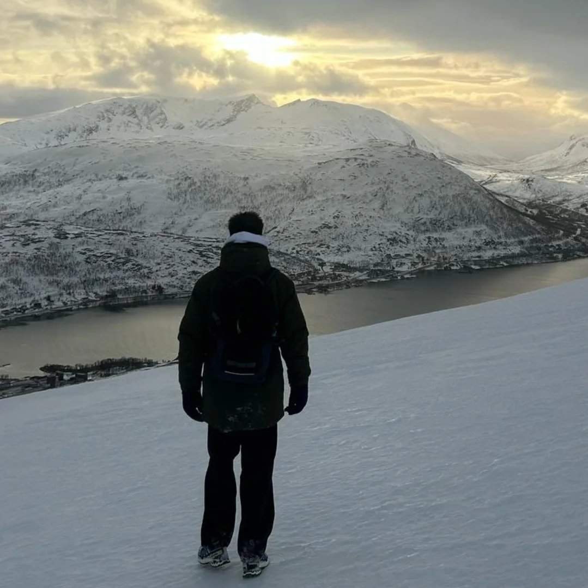
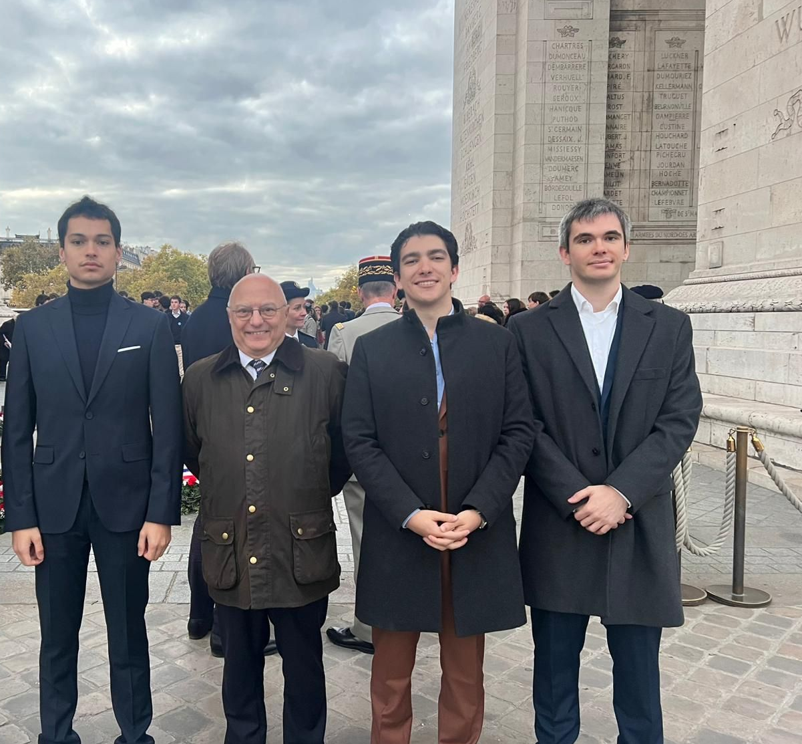

I really enjoy nature!!
Regardless of the weather, season, or environment, I love exploring national parks, forests, and mountains with a unique curiosity for the flora and fauna.

I would not be the same without my addiction to sport...
Since my childhood, I have practiced several sports activities. I heavily invested myself in four of them, which I eventually stopped: handball, table tennis, mountain biking, and hiking. Although these experiences gave me a strong sense of perseverance, they also taught me fundamental values such as the importance of trusting and motivating my teammates, as well as a sense of competitiveness and respect for nature.

Last but not least, I have always been very interested in reading popular geopolitical works and infographics (such as those published by the French publishing house Passé/Composé).
Thanks to these fields of interest, I have the opportunity to be part of the BAED (Bureau d'Analyse des Enjeux de la Défense) — Office for the Analysis of Defense Issues — as treasurer.